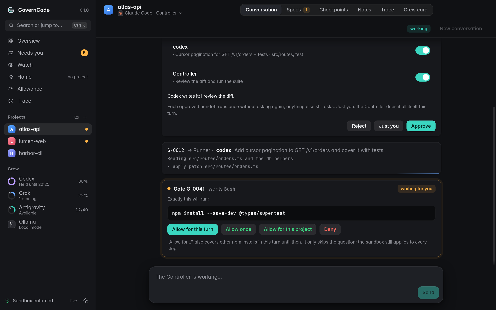
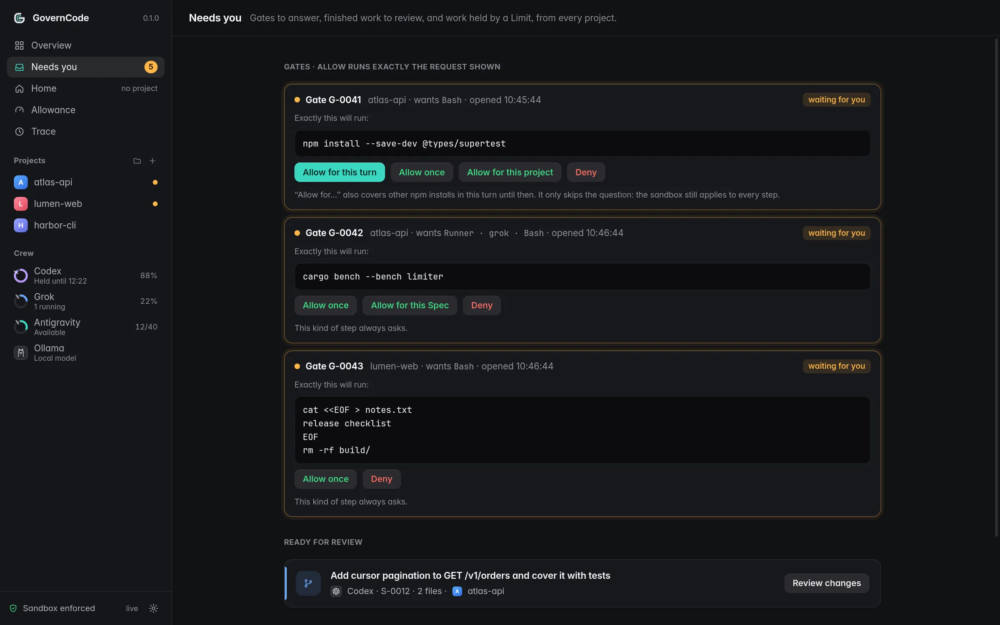
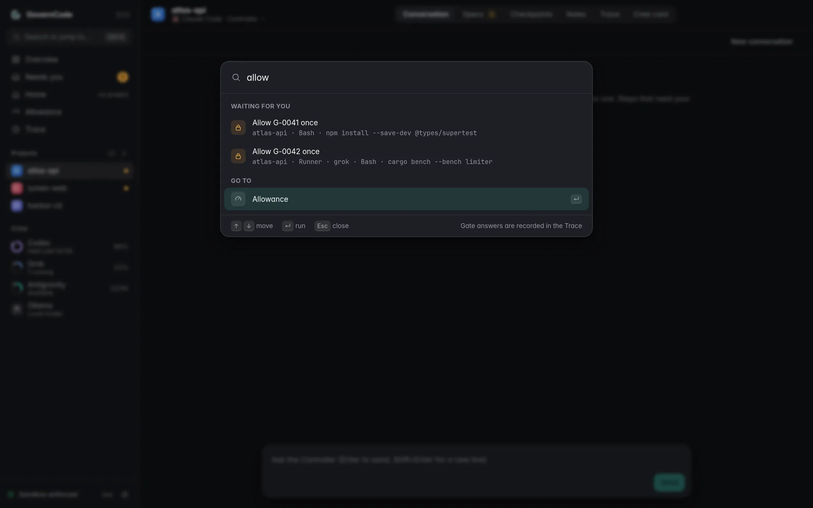
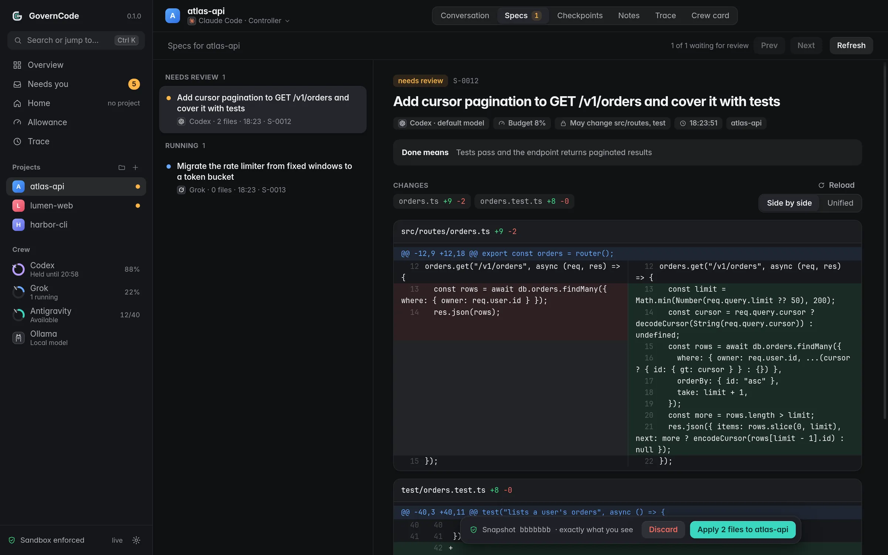
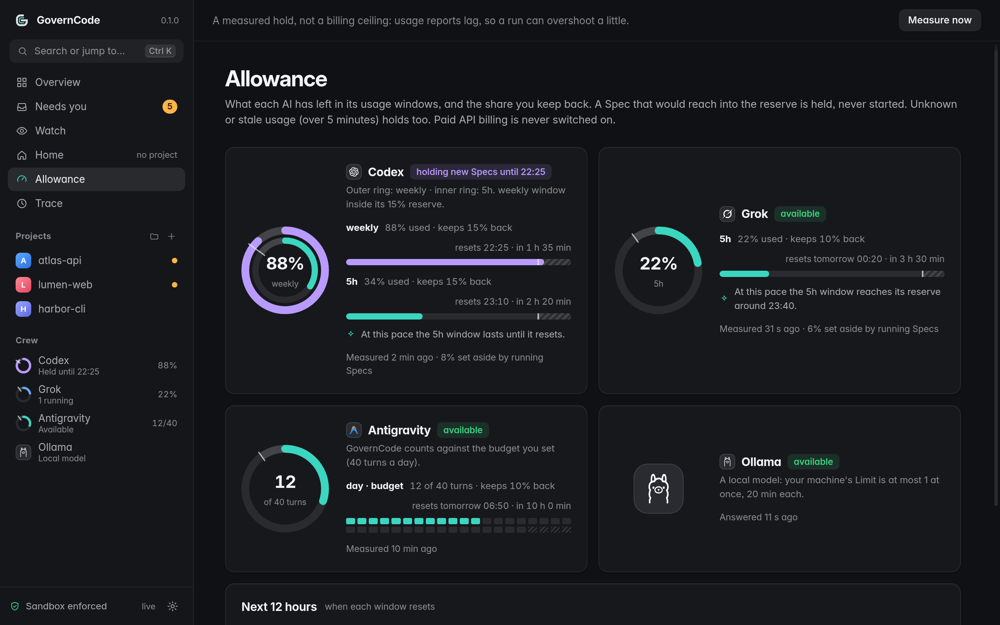
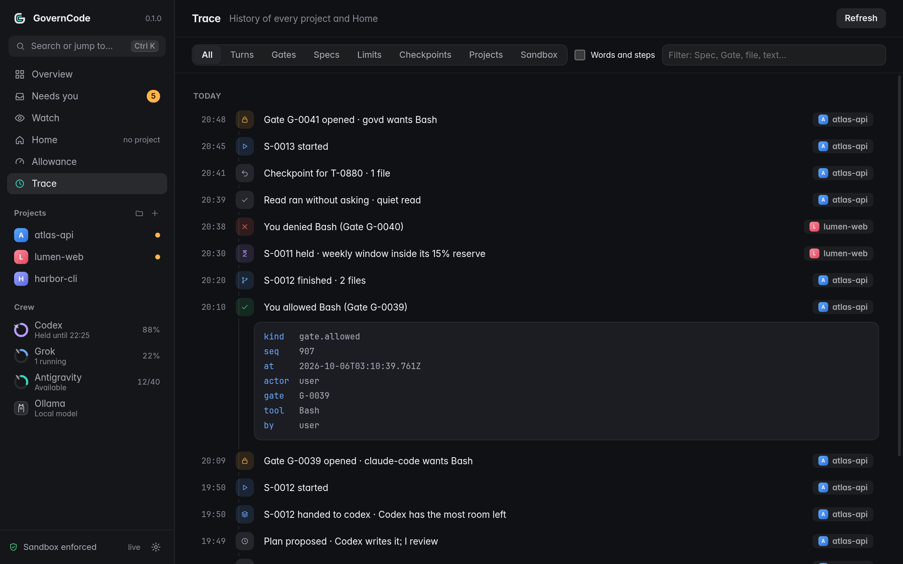

Choose a Controller, give your Runners bounded jobs, and review their work before it reaches your project. Every coding tool runs inside an OS-enforced sandbox. Gates keep risky steps in your hands; Checkpoints give you a safe way back. Cloud tools or local models. Your machine. Your call.
The new Dashboard, from the development build, with sample data. See more ↓
The new Dashboard · Studio
Calm until something needs you.
A redesign built around what GovernCode is for: who may do what, how much each AI has left, and a record of everything that happened. Grey surfaces, one accent, colour only where something has a state. Light and dark, following your system.
Needs you, in one placeGates, finished work and held work from every project, answerable where you see them.
Allowance at a glanceA ring for each AI with the reserve you keep back, and when each window resets.
Every tool by name and markYour Controller and Runners, recognisable everywhere they appear. Ctrl K reaches all of it.

Development buildConversation. The Controller plans, a Runner works in its own copy, and a Gate waits with exactly what will run.

Development buildNeeds you. Every decision waiting, from every project.

Development buildCtrl K. Jump anywhere, or answer a short Gate with its whole request in view.

Development buildReview. The diff full width, and one bar that names exactly what it applies, asked twice.

Development buildAllowance. What each AI has left, when it resets, and where the recent pace leads.

Development buildThe Trace, readable. Every step, Gate and change as a sentence, with the exact record a click away.
Screenshots from the development build with invented sample projects. Product names and logos belong to their owners.
Project update · October 5, 2026
A crew that can keep moving, and a new look.
Built · validation next
The next development build brings better continuity, work that runs side by side, and a deliberate way to recover when usage runs out. The sandbox, your approval, and diff review remain the foundations.
AVAILABLE NOW0.1.0-motion.9
Linux release candidate. Dashboard, Gates, Checkpoints, usage budgets, SSH access, and Codex, Antigravity, Grok and Ollama Runners.
The features below are implemented and locally tested. They are not included in motion.9. Real-provider and full Dashboard acceptance testing are still ahead.
Whole messages within a configurable history budget. Replies retain their provider and model attribution, and the Controller can retrieve older history.
Reset boundaries and permission to share across providers stay explicit.
02 / PARALLEL WORK
Let the crew work side by side.
Specs outlive the turn that started them. Follow up or cancel a job, set concurrency caps, and let the Controller report finished work while the Dashboard is open.
Each job keeps its own copy. Only you accept its changes.
03 / USAGE RECOVERY
A limit needn’t be a dead end.
Resume a held or limited Spec yourself, or opt in to resume at a known reset. Continue a limited Controller turn without treating it as a new request.
Fresh usage checks every time. No guessed reset times. Automatic recovery is off by default.
✓
Locally verified. Live acceptance is the next checkpoint.
1,436 package tests · 36 Dashboard tests · typechecks and Dashboard build · Rust tests and sandbox self-test. Every screen of the new Dashboard design is in the development build, each independently reviewed.
What it does
Your tools, your rules, one crew
GovernCode doesn't replace your AI coding tools. It hires them, fences them in, keeps the receipts, and hands you the undo button.
Controller + Runners
works today
One AI leads, the others take jobs. The Controller keeps the big picture and hands bounded jobs (Specs) to Runners: a brief, a scope, a budget, and what "done" means. Each Runner works in its own copy of your project, so nobody trips over anybody.
Controller · Claude Code or Codex Runners · Codex, Antigravity, Grok and Ollama
Gates
works today
You pick how often it asks: Relaxed, Balanced or Strict. When it asks, you see exactly what will run, byte for byte, not a friendly summary. Say yes once, for the rest of this turn, or for this project. The fence never moves; you just stop being asked about npm test forty times.
Relaxed, Balanced or Strict: you pick how often. rm, sudo, git changes, installs, network, paid AI: always ask.
Sandbox
works today
Deny by default, and the OS means it. Landlock and seccomp fence every AI tool: filesystem boundaries, restricted TCP access, and no way to reach the daemon to approve its own Gates. If your machine can't enforce it, GovernCode refuses to start. There is no "just this once" switch.
govern-sup selftest· must pass, or nothing runs
Checkpoints
works today
Checkpoints for the lead, a diff for every Runner. A Runner's work never lands until you accept its diff. In a git project every Controller turn is snapshotted before and after (files over 100 MB excepted, and it tells you if a snapshot fails), so you can put changed files back exactly. Undo refuses if you have edited those files since: it will never "restore" over your own work. The Trace keeps an append-only record of the work.
gov undo T-12· restored 2 files
Limits
works today
Your quota's bodyguard. A Runner's job doesn't start if it would reach into the reserve you set for its provider, and it is stopped if the provider crosses it while it runs (usage reports lag, so a little overshoot is possible). Unknown usage counts as "no". Paid overage is never switched on for you. Local models get a machine limit instead: how many at once, how many minutes each.
gov reserve codex weekly 15
Local models
works today
Small jobs, zero quota. Point a Spec at a model running in Ollama on your own machine. It gets no tools and runs no commands: it proposes whole files, GovernCode checks every path against the job's scope, and you review it like anyone else's work.
qwen3.5:9b wrote a README section in 6 s no cloud quota was harmed
What we stand for
Nine things we won't budge on
The short version. The long version is in the repo, and every one of them is backed by code, a test, or both.
02
You ship it, you own it.
GovernCode exists to make building software with AI more approachable: fewer surprises, clearer reviews, an easy undo. It doesn't make anyone less responsible. Whatever you accept is yours, so read the diff, understand the code, run the tests, and know what you're shipping before you ship it.
The AI can write it. Only you can answer for it.
1You hold the controls.
AI does the work; you make the calls. You choose how often it asks; risky steps always wait for your yes, other AIs' work waits for your review, and the Controller's changes can be undone.
3Deny by default, fail closed.
Enforced by the operating system, not by asking the AI nicely.
4Any model can lead.
No favourite vendor in the design. Today Claude Code and Codex can lead; more Controllers are a future goal.
5Honest about limits.
We say what we measure, how, and where the edges are. Especially the edges.
6Free and open, forever.
MIT. No paid tier, no telemetry, no account. Your code stays on your machine.
7Built with AI, openly.
AI writes a lot of GovernCode, and we say exactly which AI did what.
8Small, boring, verifiable.
Plain code and a test for every rule that matters. Boring beats clever.
9Respect, always.
Love AI or distrust it, any OS, any tool: all welcome. Critique the code, never the people.
Free, actually free
Free and open source
Free and open source (MIT). Always will be. No "pro" tier lurking behind the next release.
It runs on your machine, uses the AI subscriptions you already have, and keeps your code, keys and history local. There's no hosted service to sign up for, because there's no hosted service.
Oh, by the way. If GovernCode saves you an afternoon and you feel like saying thanks, you can buy Dave a coffee. The crew runs on tokens; Dave runs on coffee. Only one of them has a button. Zero pressure: the code is yours either way.
try it (Linux, release candidate)
$ sha256sum -c SHA256SUMS
$ tar xzf governcode-0.1.0-motion.9-linux-x86_64.tar.gz
$ cd governcode-0.1.0-motion.9-linux-x86_64
$ ./install.sh --service # under ~/.local, no root
$ gov connect claude
$ gov connect codex
$ gov demo
Download the archive and SHA256SUMS from Releases (Linux x86_64). Needs Linux 6.12+ (Landlock ABI 6), Node 22.18+ and git, plus connected AI tools. Run gov connect claude and gov connect codex for the demo. gov demo walks you through a real task in about five minutes; the Dashboard is in your app launcher.
Release channels
Debate, Motion, Decree
One repository, three channels, named the way a good parliament works: argue first, vote second, then it's the law.
Debate
branch debate · where work happens
Ideas argue it out here. It's where the newest things land first, and occasionally where they get voted down.
Motion
tags vX.Y.Z-motion.N · release candidates
Seconded, not yet passed. Try it, poke it, tell us what broke. The current published candidate is 0.1.0-motion.9.
Decree
tags vX.Y.Z · stable
Passed into law. Boring, dependable, and exactly what we said it would be.
Roadmap
Where it stands
Linux first. The core and early Dashboard are available; the newest development features are now ready for live validation. Here is the order of work ahead, without promised dates.
available
Core + crew
Sandbox, Gates, Specs, Limits, Checkpoints and CLI.
available · redesigned
Dashboard
Chat, review, approvals, Crew, Notes, Allowance and tool sign-in. The Studio redesign is complete in the development build.
now
Live validation
Exercise memory, parallel work and recovery with real tools and the Dashboard.
next
More ACP Runners
OpenCode first. Audited profiles, controlled installs and measured or counted budgets.
after that
Less friction
Measure blocked work and repeated Gates. Keep the sandbox on; improve scoped access.
later
Threads + queues
Durable conversations, steering, queued work, and clearer lineage.
Still on the longer-term roadmap: macOS and Windows together, Pager on Android then iOS, and Modules. Mobile work is deferred while the desktop workflow matures. API-key Runners wait for the secrets design.